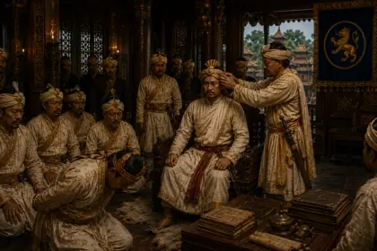
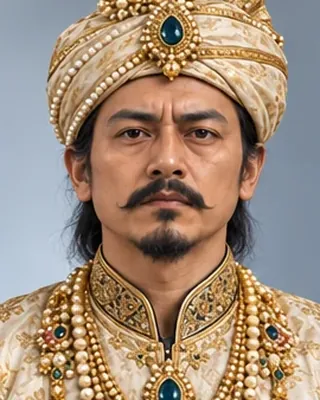
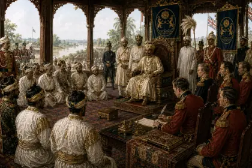
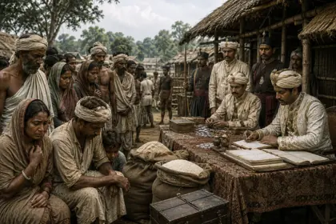
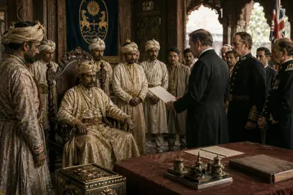

February 1818
পুৰন্দৰ সিংহ
1818–1819, 1833–1838 · Thirty-eighth Ahom king

Installed as a boy in 1818 by Ruchinath Burhagohain, lost the throne to the Burmese in 1819, and was made a tributary prince by the British in 1833. Deposed in September 1838.
Born 1807, died 1 October 1846 at Jorhat. Also called Suremphaa II.
Record confidence: high.

February 1818

February 1819

April 1833

1834–1837

October 1838